Purchase Orders
Purchase Order (PO) is used for purchasing the Materials or services based on the Pre Contract Id Approved after Vendor Bid Process. In Purchase Order, the user has to input the material Cost Code Id, the quantity, Price, Vendor ID, Material required date, Payment details, etc.
You can perform and view the following in the Purchase Orders Section:
- Search the Existing Records and Select the PO
- Enter the Purchase Order Details
- View the PO - Schedule of Items
- View the Resource Delivery/Progress
- View the Invoice Status
- View the Pre-Contract List and Documents
- View the Stage 1 Request
- View the Stage 1 Approval
- View the RFQ Tendering
- View the Stage 2 Request
- View the Stage 2 Approval
- View the Repeat PO<<Functionality under development>>
Search Existing Records and Select PO:
This section helps you to search the existing records and select the PO.
To search the existing records and select the PO, do the following.
- Select the EPS ID/Name or Project ID/Name and the Enterprise Projects window opens as shown in the figure.

- On the Enterprise Projects window, select the project and click
 .
. - Click Search available on the right side of the screen.
- The purchase orders are shown on the screen.
- Select the PO (click anywhere in the area) as shown in the figure.
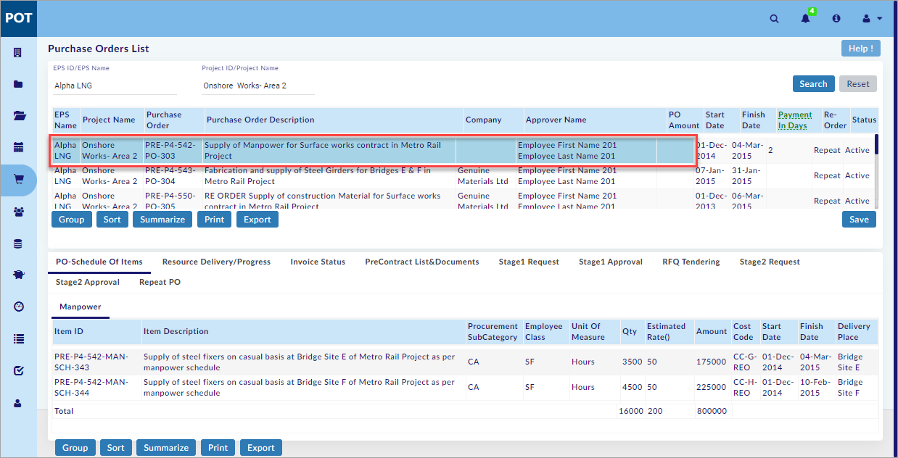
Note:
- PO generated after Stage 2 Approval is displayed on this screen.
- Purchase orders are not available for given search criteria warning message is shown, if Pre-contracts are not available for the selected project.
- Click Reset to reset the screen to the default view.
You have successfully searched the existing records and selected the PO.
Enter Purchase Order Details:
This section helps you to enter the purchase order details.
To enter the purchase order details, do the following.
- Select the EPS ID/Name or Project ID/Name and the Enterprise Projects window opens as shown in the figure.

- On the Enterprise Projects window, select the project and click
 .
. - Click Search available on the right side of the screen.
- The purchase orders are shown on the screen.
- Double-click Payment In Days as shown in the figure.
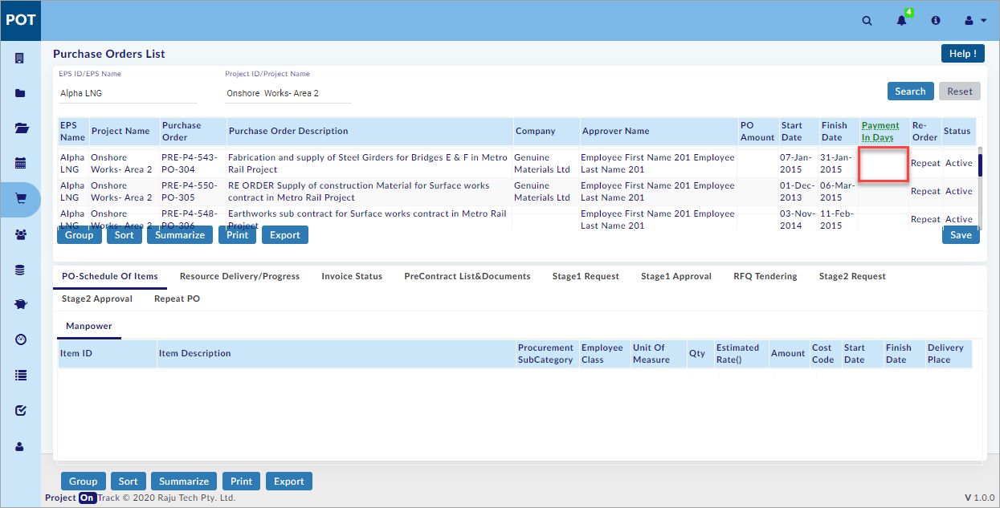
- Enter the number of days and click
 .
.
You have successfully entered and saved the purchase order details.
View PO - Schedule of Items:
This section helps you to view the PO - Schedule of Items. It will show the details of the purchase order schedule of Items.
To view the PO - Schedule of Items, do the following.
- Search the Existing Records and Select the PO. (See the Search Existing Records and Select PO Section above)
- The PO - Schedule of Items tab opens as shown in the figure.
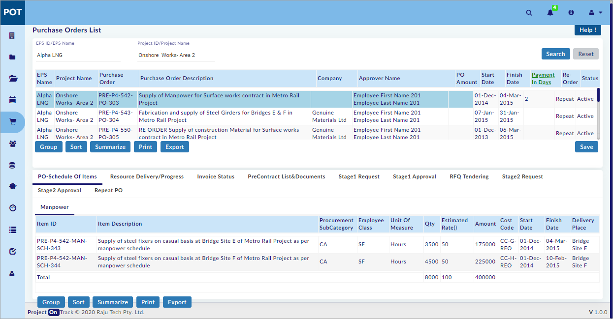
Note:
- Scheule Items related to the selected PO is seen in this tab.
You have successfully viewed the PO - Schedule of Items.
View Resource Delivery/Progress:
This section helps you to view the Resource Delivery/Progress. This tab gives the user, all the delivery details of the purchase order like date of delivery, quantity delivered, place of delivery, receivers name, etc.
To view the Resource Delivery/Progress, do the following.
- Search the Existing Records and Select the PO. (See the Search Existing Records and Select PO Section above)
- Select Resource Delivery/Progress tab.
- The Resource Delivery/Progress tab opens as shown in the figure.
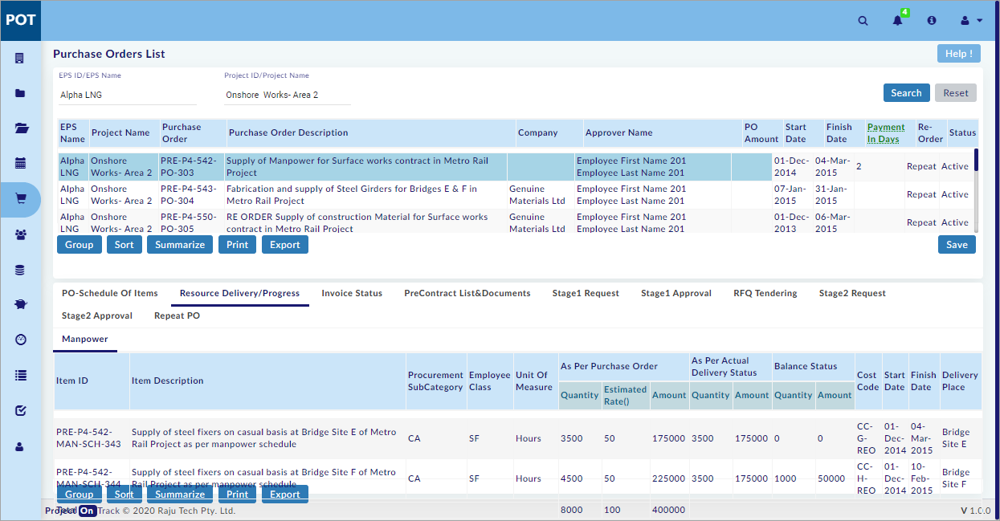
Note:
- Details given during the generation of PO is seen in As Per Purchase Order column.
- Usage of schedule items in Resources module, Asbuilt records>Work diary>List of Created Work diary>Create>Materials>Supplier Docket is seen in As Per Actual Delivery Status column.
- As Per Purchase Order – As Per Actual Delivery Status is seen in Balance Status column.
You have successfully viewed the Resource Delivery/Progress.
View Invoice Status:
This section helps you to view the Invoice Status. This tab gives the user, all the Invoice Status of all the Payments.
To view the Invoice Status, do the following.
- Search the Existing Records and Select the PO. (See the Search Existing Records and Select PO Section above)
- Select Invoice Status tab.
- The Invoice Status tab opens as shown in the figure.
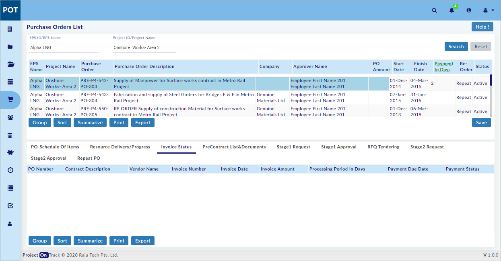
Note:
- Details of the invoice generated to selected PO are seen in this tab.
You have successfully viewed the Invoice Status.
View Pre-Contract List and Documents:
This section helps you to view the Pre-Contract List and Documents. It will show the Pre Contract list & Reference documents List.
To view the Pre-Contract List and Documents, do the following.
- Search the Existing Records and Select the PO. (See the Search Existing Records and Select PO Section above)
- Select Pre-Contract List & Documents tab.
- The Pre-Contract List & Documents tab opens as shown in the figure.
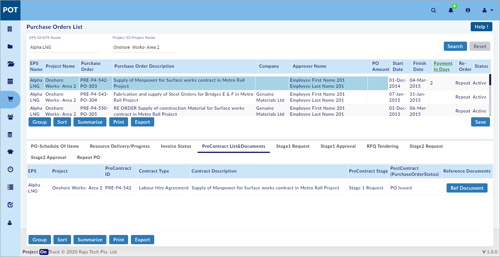
- Click
 to view the uploaded document details.
to view the uploaded document details.
Note:
- Pre-Contract and document details are seen in this tab.
You have successfully viewed the Pre-Contract List and Documents.
View Stage 1 Request:
This section helps you to view the Stage 1 Request. It will show the list of Stage1 Request.
To view the Stage 1 Request, do the following.
- Search the Existing Records and Select the PO. (See the Search Existing Records and Select PO Section above)
- Select Stage 1 Request tab.
- The Stage 1 Request tab opens as shown in the figure.
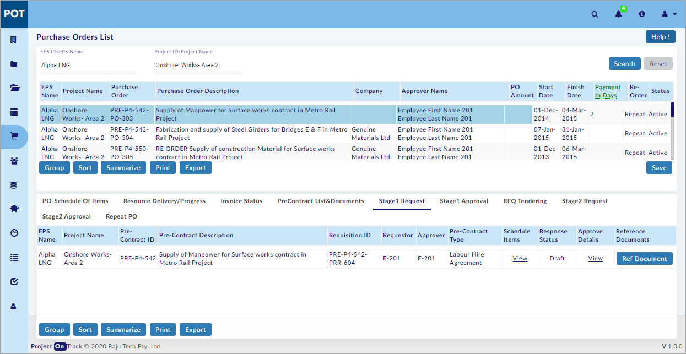
- Click View under Schedule Items to view the Schedule items of selected PO.
- Click View under Approve Details to view the Request, and Approval details.
- Click
 to view the uploaded document details.
to view the uploaded document details.
You have successfully viewed the Stage 1 Request.
View Stage 1 Approval:
This section helps you to view the Stage 1 Approval. It will show the list of Stage 1 Approval.
To view the Stage 1 Approval, do the following.
- Search the Existing Records and Select the PO. (See the Search Existing Records and Select PO Section above)
- Select Stage 1 Approval tab.
- The Stage 1 Approval tab opens as shown in the figure.
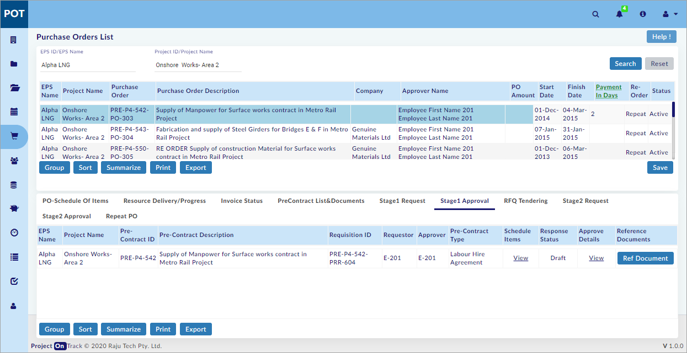
- Click View under Schedule Items to view the Schedule items of selected PO.
- Click View under Approve Details to view the Request, and Approval details.
- Click
 to view the uploaded document details.
to view the uploaded document details.
You have successfully viewed the Stage 1 Approval.
View RFQ Tendering:
This section helps you to view the RFQ Tendering. In this screen, List of Companies and Tender open and close dates are displayed.
To view the RFQ Tendering, do the following.
- Search the Existing Records and Select the PO. (See the Search Existing Records and Select PO Section above)
- Select RFQ Tendering tab.
- The RFQ Tendering tab opens as shown in the figure.
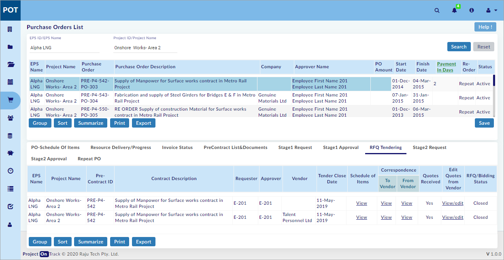
- Click View under Schedule of Items to view the Schedule items of selected PO.
- Click View under Correspondence To Vendor, and From Vendor to view the Document details of vendor.
- Click View/edit under Edit Quotes from Vendor to view the Bid details.
You have successfully viewed the RFQ Tendering.
View Stage 2 Request:
This section helps you to view the Stage 2 Request. It will show the list of Stage2 Request.
To view the Stage 2 Request, do the following.
- Search the Existing Records and Select the PO. (See the Search Existing Records and Select PO Section above)
- Select Stage 2 Request tab.
- The Stage 2 Request tab opens as shown in the figure.
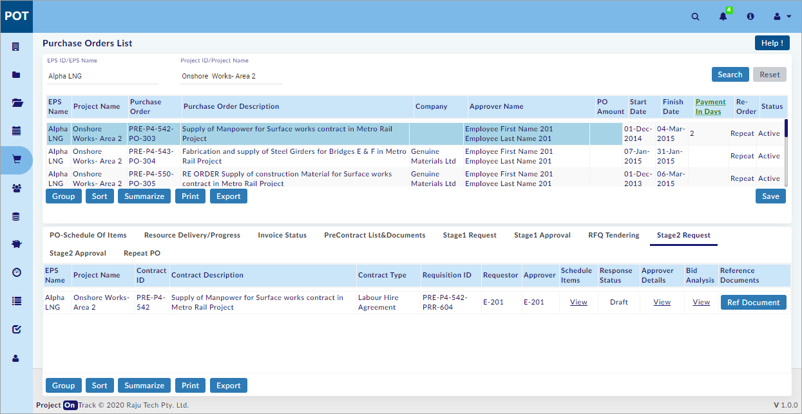
- Click View under Schedule Items to view the Schedule items of selected PO.
- Click View under Approver Details to view the Request, and Approval details.
- Click View under Bid Analysis to view the Bid details.
- Click
 to view the uploaded document details.
to view the uploaded document details.
You have successfully viewed the Stage 2 Request.
View Stage 2 Approval:
This section helps you to view the Stage 2 Approval. It will show the list of Stage2 Approval.
To view the Stage 2 Approval, do the following.
- Search the Existing Records and Select the PO. (See the Search Existing Records and Select PO Section above)
- Select Stage 2 Approval tab.
- The Stage 2 Approval tab opens as shown in the figure.
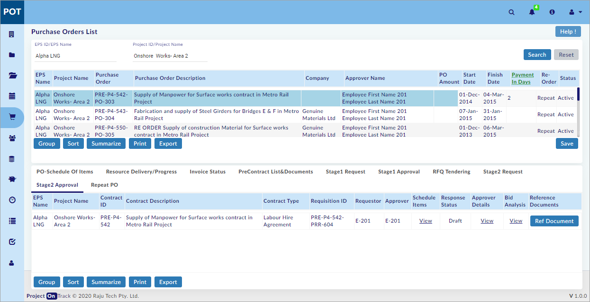
- Click View under Schedule Items to view the Schedule items of selected PO.
- Click View under Approver Details to view the Request, and Approval details.
- Click View under Bid Analysis to view the Bid details.
- Click 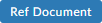 to view the uploaded document details.
You have successfully viewed the Stage 2 Approval.
View Repeat PO<<Functionality under development>>
Created with the Personal Edition of HelpNDoc: Generate Kindle eBooks with ease